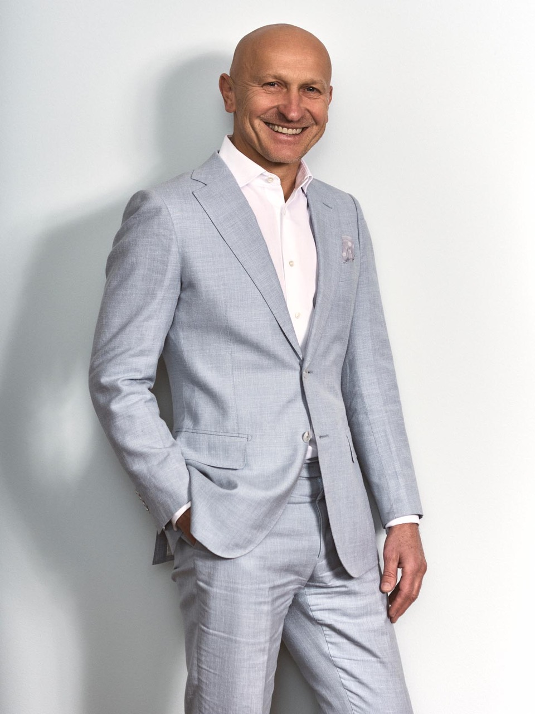

ENDOKRINE CHIRURGIE
Nebennierenchirurgie
Laparoskopische Adrenalektomie
ENDOKRINE CHIRURGIE
Laparoskopische Adrenalektomie
Wenn die Nebenniere zu viele Hormone produziert, kann das den ganzen Körper belasten - die laparoskopische Entfernung schafft Abhilfe.
Ein schonender Eingriff über Schlüssellochtechnik, interdisziplinär geplant mit der Endokrinologie.
Das Verfahren
Laparoskopische Entfernung einer oder beider Nebennieren. Indikationen: hormonaktive Tumoren (Adenome, Phäochromozytome) oder Vergrößerungen. Minimal-invasiv über Schlüssellochtechnik.
Verfahren
Eignung
Die Nebennierenchirurgie ist besonders geeignet für Patienten mit Conn-Syndrom, Cushing-Syndrom, Phäochromozytom oder Inzidentalom ab 4cm.
Die genaue Eignung wird im persönlichen Erstgespräch mit Univ.-Prof. Dr. Gerhard Prager besprochen.

IHR CHIRURG
Ehem. Weltpräsident der IFSO. Über 9.900 Eingriffe. Professor an der MedUni Wien.
Fragen zur Nebennieren-OP?
Termin vereinbaren →Ein Erstgespräch ohne Erwartungen - in dem wir gemeinsam klären, welcher Weg für Sie der richtige ist.
+43 660 489 58 51 Persönliches Erstgespräch vereinbarenPrivatordination Wien 7 · Mittwoch 16-20 Uhr